Chapter 2 Data visualisation
This chapter is based on Chapter 3 High Quality Graphics in R of the Modern Statistics for Modern Biology book (Holmes and Huber 2019Holmes, Susan, and Wolfgang Huber. 2019. Modern Statistics for Modern Biology. Cambridge Univeristy Press.).
2.1 Introduction
The goal of data visualisation is to
- interactively explore and understand data, i.e. exploratory data analysis;
- to present and communicate results, whether as a preliminary analysis or final results.
Our learning objectives are
- Familiarise ourselves with plotting in R using base graphics and
ggplot2; - Understand the concepts behind the grammar of graphics and
ggplot2; - Learn how to visualise data along 1, 2 or more dimensions;
- Learn about
plotly, one package for producing interactive visualisations.
The difference between this chapter, and the Data Visualisation of the introductory WSBIM1207 course is that here we focus on understanding and communicating data through visualisation, rather than on the syntax of the plotting packages. Here are a couple couple of visualisation horror picture show from a lecture by Wolfgang Huber to illustrate what not to do.
Let’s use the famous Anscombe’s quartet data as a motivating example. This data is composed of 4 pairs of values, \((x_1, y_1)\) to \((x_4, y_4)\):
| x1 | x2 | x3 | x4 | y1 | y2 | y3 | y4 |
|---|---|---|---|---|---|---|---|
| 10 | 10 | 10 | 8 | 8.04 | 9.14 | 7.46 | 6.58 |
| 8 | 8 | 8 | 8 | 6.95 | 8.14 | 6.77 | 5.76 |
| 13 | 13 | 13 | 8 | 7.58 | 8.74 | 12.74 | 7.71 |
| 9 | 9 | 9 | 8 | 8.81 | 8.77 | 7.11 | 8.84 |
| 11 | 11 | 11 | 8 | 8.33 | 9.26 | 7.81 | 8.47 |
| 14 | 14 | 14 | 8 | 9.96 | 8.10 | 8.84 | 7.04 |
| 6 | 6 | 6 | 8 | 7.24 | 6.13 | 6.08 | 5.25 |
| 4 | 4 | 4 | 19 | 4.26 | 3.10 | 5.39 | 12.50 |
| 12 | 12 | 12 | 8 | 10.84 | 9.13 | 8.15 | 5.56 |
| 7 | 7 | 7 | 8 | 4.82 | 7.26 | 6.42 | 7.91 |
| 5 | 5 | 5 | 8 | 5.68 | 4.74 | 5.73 | 6.89 |
Each of these \(x\) and \(y\) sets have the same variance, mean and correlation:
| 1 | 2 | 3 | 4 | |
|---|---|---|---|---|
| var(x) | 11.0000000 | 11.0000000 | 11.0000000 | 11.0000000 |
| mean(x) | 9.0000000 | 9.0000000 | 9.0000000 | 9.0000000 |
| var(y) | 4.1272691 | 4.1276291 | 4.1226200 | 4.1232491 |
| mean(y) | 7.5009091 | 7.5009091 | 7.5000000 | 7.5009091 |
| cor(x,y) | 0.8164205 | 0.8162365 | 0.8162867 | 0.8165214 |
But…
While the residuals of the linear regression (see chapter 3) clearly indicate fundamental differences in these data, the most simple and straightforward approach in visualisation is to highlight the fundamental differences in the datasets.
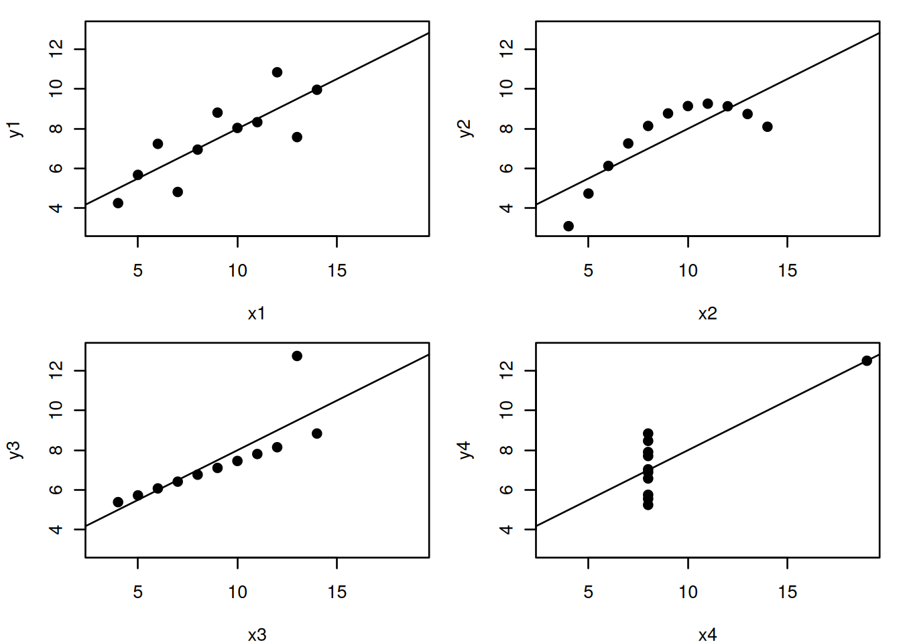
See also another, more recent example: The Datasaurus Dozen dataset.

Throughout this course we will focus on producing visualisations that will enable understanding important features of biomolecular data or the effect of their transformation and analyses. With this in mind, the beauty of the visualisations we will produce won’t be assessed by how visually attractive the figures are, but how they advance our understanding the data. In the process of data exploration and data analysis, we want to be able to quickly generate and interpret figures. It is of course important to polish the graphics to make them visually appealing and improve communication with the audience, once a useful figure has been chosen as a means of communication.
An important aspect of data visualisation is data manipulation, transformation and the format of the data: as seen in WSBIM1207, its scale (see below) and normalisation of the data (see chapter 5).
A last feature of data that is intimately associated with its manipulation and visualisation is its structure: long and wide dataframes (as introduced in WSBIM1207 or dedicated objects (see chapter 3). Some visualisations will be much easier when the data is formatted in a certain way.
2.2 Base plotting
The default graphics system that comes with R, often called base R graphics is simple and fast. It is based on the painter’s model or canvas, where different output are directly overlaid on top of each other.
Below, we display the relation between the optical density of the deoxyribonuclease (DNase) protein as measure by an enzyme-linked immunosorbent assay (ELISA) assay for all observations.
## Run conc density
## 1 1 0.04882812 0.017
## 2 1 0.04882812 0.018
## 3 1 0.19531250 0.121
## 4 1 0.19531250 0.124
## 5 1 0.39062500 0.206
## 6 1 0.39062500 0.215
Figure 2.1: The default base plot function on the DNase data.
We can add some features on the plot, such vertical dotted lines for
all observed observations and customise the look and feel of the plot
by setting specific arguments to the plot function.
plot(DNase$conc, DNase$density,
xlab = "DNase concentration (ng/ml)",
ylab = "Optical density",
pch = 1,
col = "steelblue")
abline(v = unique(DNase$conc), lty = "dotted")Figure 2.2: Customising a base figure using function arguments and overlaying new graphical features.
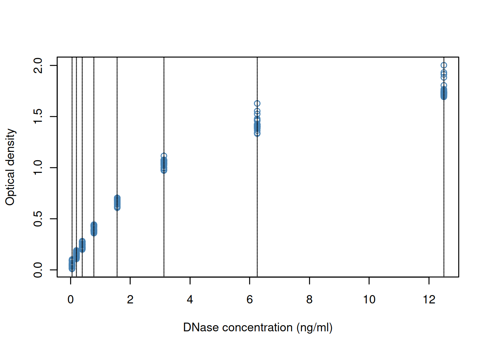If we wanted to change anything to the figures, we would need to repeat all the commands and modify accordingly. Any additional command would be added to the existing canvas.
► Question
How would you produce a figure that differentiates the different runs using base graphics?
► Solution
► Question
Use the hist and boxplot functions to produce a
histogram of all optical densities and a boxplot of the densities
split by run.
► Solution
The base graphics function are very effective to quickly produce out of the box figures. However, there is no global overview and parametrisation of the visualisation. The layout decisions have to be made up upfront (and if not adequate, the figure needs to be redrawn) and every aspect of the figure is customised locally as function arguments.
More generally, base graphics functions will work with various inputs:
above we have worked with a data.frame, vectors and a formula. There
is no unified type of data across all functions which makes it
efficient for some types of data (if they match), but also very
heterogeneous in terms of interface, leading to a lot of customisation
code.
Finally, defaults, and colours in particular, are poorly chosen.
2.3 The ggplot2 package
ggplot2 is a plotting package that makes it simple to create
complex plots from data in a data frame. It provides a more
programmatic interface for specifying what variables to plot, how they
are displayed, and general visual properties. The theoretical
foundation that supports the ggplot2 is the Grammar of
Graphics1 Wilkinson, Leland. 2005. The Grammar of Graphics (Statistics
and Computing). Berlin, Heidelberg: Springer-Verlag.. Instead of producing the figure, the user defines and
assembles the visual components into an object that is the
displayed. There is a book about ggplot22 Wickham, Hadley. 2016. ggplot2: Elegant Graphics for Data
Analysis. Springer-Verlag New York. that provides a good
overview, but it is outdated. The ggplot2 web page
(https://ggplot2.tidyverse.org) provides ample documentation.
To build a ggplot, we will use the following basic template that can be used for different types of plots:
ggplot(data = <DATA>, mapping = aes(<MAPPINGS>)) + <GEOM_FUNCTION>()We need first to load the ggplot2 package:
- use the
ggplot()function and bind the plot to a specific data frame using thedataargument
Figure 2.3: We have only specified the data, and there’s nothing to display yet.

- define a mapping (using the aesthetic (
aes) function), by selecting the variables to be plotted and specifying how to present them in the graph, e.g. as x/y positions or characteristics such as size, shape, colour, etc.
Figure 2.4: ggplot2 can now generate the axes, ticks and ranges based on the data.
- add geoms – graphical representations of the data in the plot
(points, lines, bars). To add a geom to the plot use the
+operator. Because we have two continuous variables, let’s usegeom_point()first:
Figure 2.5: Final figures with rendering of the data as a scatter plot.

► Question
Compare the ggplot2 and base graphics version of the density
vs. concentration plot. Which one do you prefer, and why?
It is possible to store the output of the ggplot function into a
variable that can be visualised by either typing its name in the
console or explicitly printing it (like any other variable).
Figure 2.6: Saving and printing an object.
Let’s immediately customise this visualisation to
highlight how to re-use the
ggobject without repeating the plotting code andhow we can add additional (identical or different) geoms to a plot.
Figure 2.7: Adding another geom_point with its own (local) aesthetics.
► Question
What do you think of the colours used to differentiate the different runs above?
► Solution
Finally, we can model easily model and visualise the relation relation between concentration and optical density using a smoothing geom:
ggplot(data = DNase,
mapping = aes(x = conc,
y = density)) +
geom_point(aes(colour = as.character(Run))) +
geom_smooth(method = "loess")## `geom_smooth()` using formula = 'y ~ x'Figure 2.9: Modelling the relation between concentration and optical density.
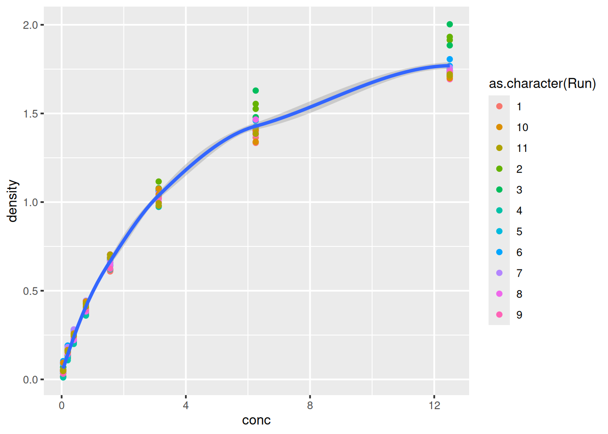2.4 Visualising 1D data
Let’s start by exploring some 1 dimensional visualisation. This is very relevant for omics data such as transcriptomics or quantitative proteomics, when contrasting the expression values across multiple samples.
We will be using data from the
Hiiragi2013
package and describes the cell-to-cell expression variability followed
by signal reinforcement progressively segregates early mouse lineages
(Ohnishi et al. 2014Ohnishi, Y, W Huber, A Tsumura, M Kang, P Xenopoulos, K Kurimoto, A K Oleś, et al. 2014. “Cell-to-Cell Expression Variability Followed by Signal Reinforcement Progressively Segregates Early Mouse Lineages.” Nat Cell Biol 16 (1): 27–37. https://doi.org/10.1038/ncb2881.).
## X1426642_at X1418765_at X1420085_at X1418863_at X1425463_at X1416967_at
## 1 E3.25 6.608374 11.95630 3.027715 4.843137 5.500618 1.731217
## 2 E3.25 7.385253 9.23306 9.293016 5.530016 6.160900 9.697038
## 3 E3.25 5.683255 11.24337 2.940142 4.418059 4.584961 4.161240
## 4 E3.25 6.394760 10.81817 9.715243 5.982314 4.753439 9.540123
## 5 E3.25 7.874155 10.09790 8.924228 4.923580 4.629728 8.705340
## 6 E3.25 6.104932 10.39018 11.325952 4.068520 4.165692 8.696228
## File.name Embryonic.day Total.number.of.cells lineage genotype
## 1 E3.25 1_C32_IN E3.25 32 WT
## 2 E3.25 2_C32_IN E3.25 32 WT
## 3 E3.25 3_C32_IN E3.25 32 WT
## 4 E3.25 4_C32_IN E3.25 32 WT
## 5 E3.25 5_C32_IN E3.25 32 WT
## 6 E3.25 6_C32_IN E3.25 32 WT
## ScanDate sampleGroup sampleColour
## 1 E3.25 2011-03-16 E3.25 #CAB2D6
## 2 E3.25 2011-03-16 E3.25 #CAB2D6
## 3 E3.25 2011-03-16 E3.25 #CAB2D6
## 4 E3.25 2011-03-16 E3.25 #CAB2D6
## 5 E3.25 2011-03-16 E3.25 #CAB2D6
## 6 E3.25 2011-03-16 E3.25 #CAB2D6First, we convert a microarray gene expression data to a data.frame,
fit for some ggplot2 visualisation, focusing on genes Fgf4 (probeset
X1420085_at), Gata4 (X1418863_at), Gata6 (X1425463_at) and Sox2
(X1416967_at).
library("tidyverse")
genes <- dplyr::rename(hiiragi2013df1,
Fgf4 = X1420085_at,
Gata4 = X1418863_at,
Gata6 = X1425463_at,
Sox2 = X1416967_at) |>
select(Fgf4, Gata4,
Gata6, Sox2) |>
pivot_longer(names_to = "gene",
values_to = "expression",
everything())
head(genes)## # A tibble: 6 × 2
## gene expression
## <chr> <dbl>
## 1 Fgf4 3.03
## 2 Gata4 4.84
## 3 Gata6 5.50
## 4 Sox2 1.73
## 5 Fgf4 9.29
## 6 Gata4 5.532.4.1 Histogram
## `stat_bin()` using `bins = 30`. Pick better value with `binwidth`.Figure 2.10: Distribution of the Gata4 expression
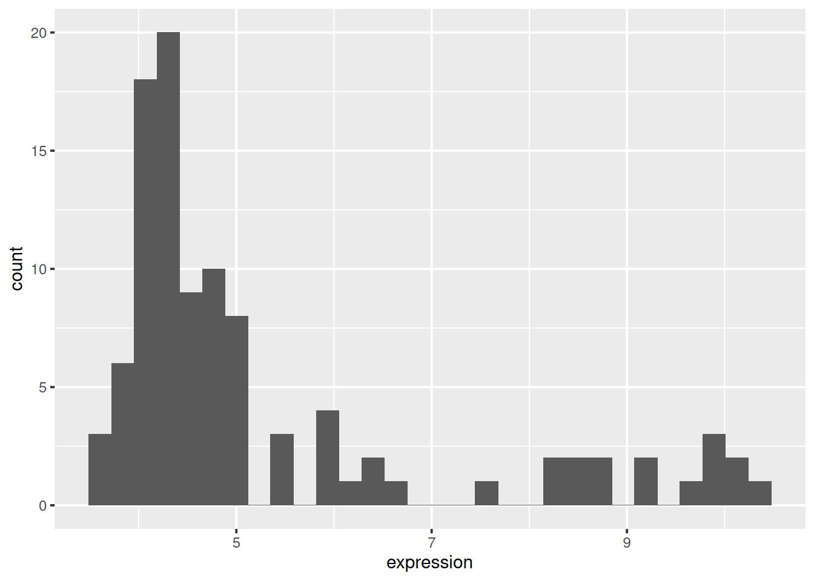2.4.2 Box plots
Figure 2.11: A boxplot of expression values.

► Question
Repeat the above figure replacing the boxes by violins using the
geom_violin. Which one do you think does a better job?
► Solution
See this post, The Boxplot and its pitfalls for more detail about boxplots and how to improve them using jitter, violin plots, and information about the sample size.
2.4.3 Dot plots and beeswarm plots
When the data aren’t too large, it is also possibly to visualise all points to get a sense of their distribution.
In a dotplot, the position of the points along the y axis is discretised into bins (set as 1/6 below) and the points are then stacked next to each other.
dotplot <- p + geom_dotplot(binaxis = "y", binwidth = 1/6,
stackdir = "center", stackratio = 0.75,
aes(color = gene)) +
theme(legend.position = "none")The beeswarm algorithms tries to avoid overlapping points: if a point were to overlap an existing point, it is shifted along the \(x\)-axis by a small amount sufficient to avoid overlap.
library("ggbeeswarm")
beeplot <- p + geom_beeswarm(aes(color = gene)) +
theme(legend.position = "none")Figure 2.13: Showing all expression values using jittering (left), a dotplot (centre) and a beeswarn plot.
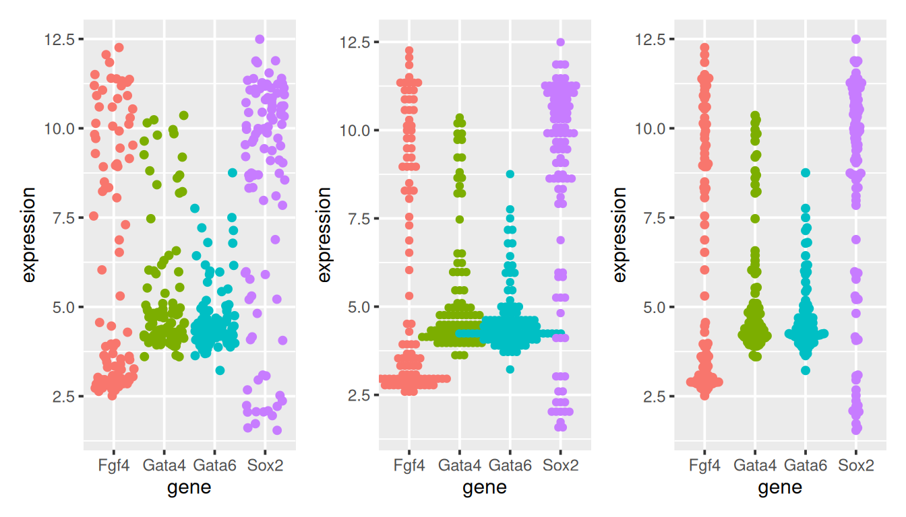2.4.4 Density and ecdf plots
densplot <- ggplot(genes, aes(x = expression, color = gene)) +
geom_density() +
theme(legend.position = "none")ecdfplot <- ggplot(genes, aes(x = expression, color = gene)) +
stat_ecdf() +
theme(legend.position = "none")Figure 2.14: Density and cumulative density functions of expression values.

2.4.5 Summary
Boxplot makes sense for unimodal distributions (see below).
Histogram requires definition of bins (width, positions) and can create visual artefacts especially if the number of data points is not large.
Density requires the choice of bandwidth; obscures the sample size (i.e. the uncertainty of the estimate).
ecdf does not have these problems; but is more abstract and interpretation requires more training. Good for reading off quantiles and shifts in location in comparative plots.
beeswarm: for up to a few dozens of points, just show the data.
2.5 Number of modes
The number of modes of a distribution depends on scale transformation of the data.
sim <- data.frame(x = exp(rnorm(n = 1e5,
mean = sample(c(2, 5),
size = 1e5,
replace = TRUE))))
p1 <- ggplot(sim, aes(x)) +
geom_histogram(binwidth = 10, boundary = 0) +
xlim(0, 400)
p2 <- ggplot(sim, aes(log(x))) +
geom_histogram(bins = 30)
p1 + p2## Warning: Removed 7964 rows containing non-finite outside the scale range
## (`stat_bin()`).Figure 2.15: Histograms of the same data without (left) and with (right) log-transformation.
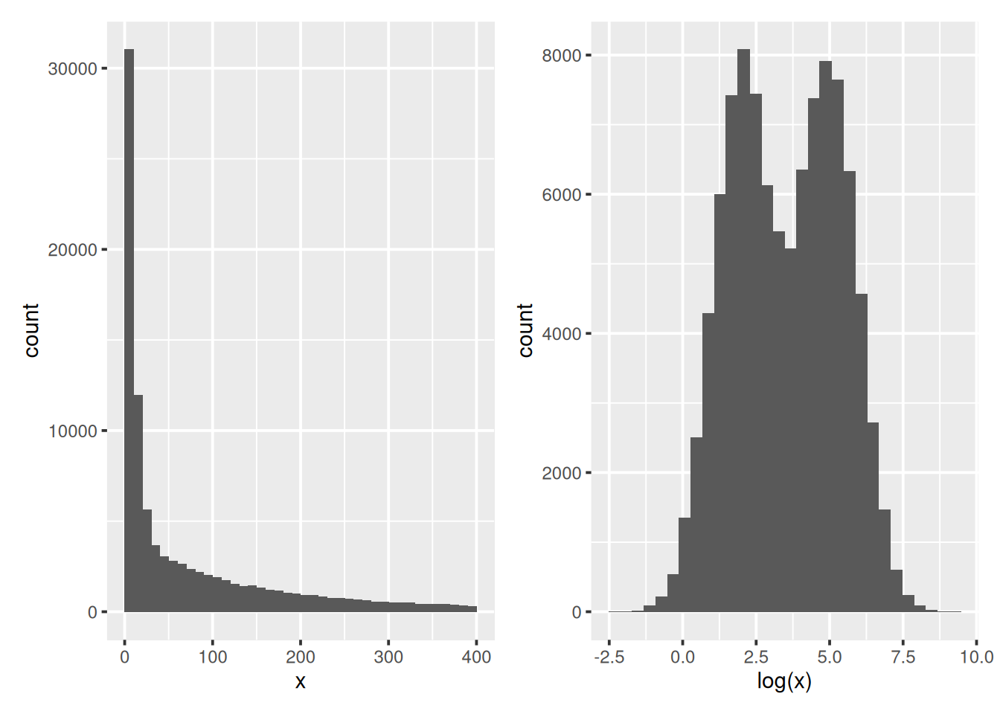This also applies to density plots.
2.6 Visualising 2D data
## 59 E4.5 (PE) 92 E4.5 (FGF4-KO)
## 1415670_at 9.503289 8.359740
## 1415671_at 11.458339 11.175453
## 1415672_at 6.699087 10.885286
## 1415673_at 6.765473 4.957310
## 1415674_a_at 9.974538 8.592410
## 1415675_at 9.294144 6.257513Figure 2.16: Scatter plot comparing the expression of a wild-type vs. FGF4 KO.
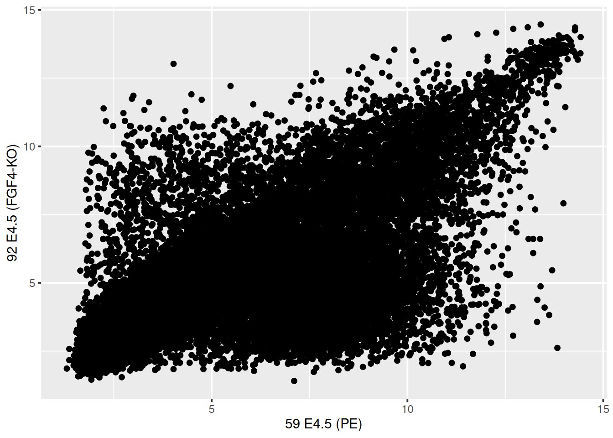► Question
The over-plotting of the dots stops us from learning anything about
the density of the different regions of the plot. Use the alpha
parameter to geom_points between 0 (full transparency) to 1 (opaque,
default).
► Solution
Figure 2.18: Focusing on contours rather that individual values.
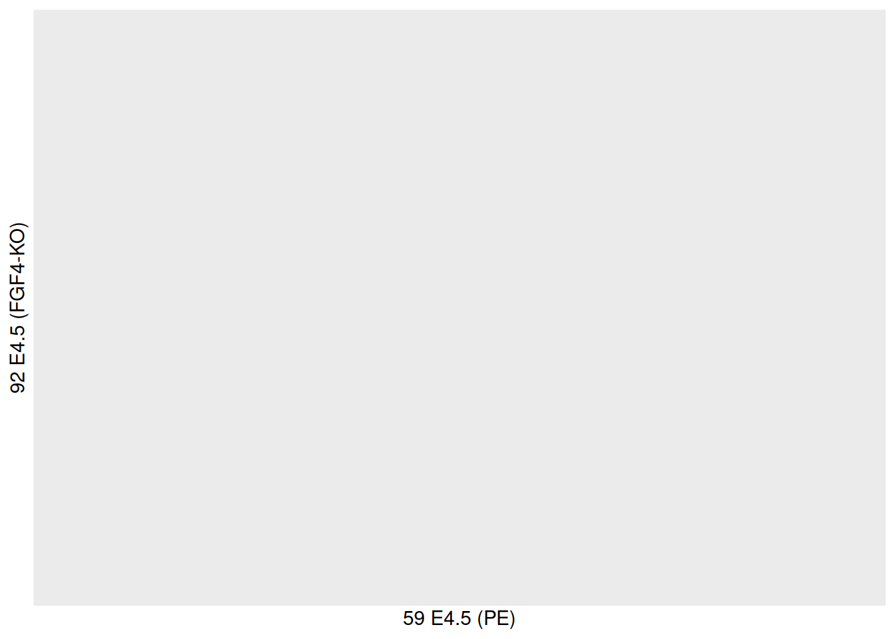Figure 2.19: Local density summaries.

2.7 Visualising data along more dimensions
When visualising data along additional dimension, we can parameterise
the points by setting their shape, colour, size and transparency, that
can be set with point aesthetics such as fill, color (or
colour), shape, size and alpha.
A very powerful way to represent data along additional dimensions is facetting, i.e. producing sub-plots for different subsets of the data. Below, we first re-annotate the data using some regular expressions
p1 <- ggplot(hiiragi2013df1, aes(x = X1426642_at, y = X1418765_at, colour = lineage)) +
geom_point()
p2 <- ggplot(hiiragi2013df1, aes(x = X1426642_at, y = X1418765_at)) +
geom_point() +
facet_grid( . ~ lineage )
p1 + p2Figure 2.20: Different sub-plots for different lineages using colours (left) of facets (right) to distinguish the different lineages.
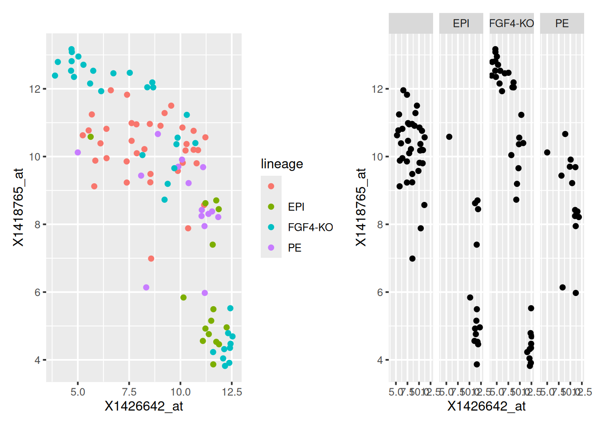ggplot(hiiragi2013df1,
aes(x = X1426642_at, y = X1418765_at)) +
geom_point() +
facet_grid( Embryonic.day ~ lineage )Figure 2.21: Different sub-plots for different lineages and embryonic stages.
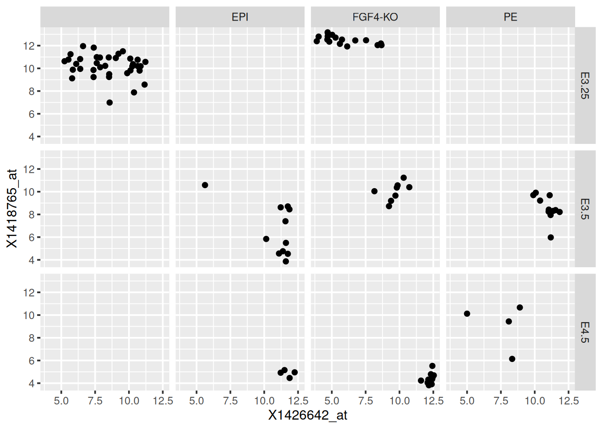► Question
Use facets to visualise the distribution of the four Fgf4, Gata4,
Gata6 and Sox2 genes in the genes data using histograms.
► Solution
2.8 Interactive visualisation
scp <- ggplot(hiiragi2013df2[1:100, ],
aes(x= `59 E4.5 (PE)`, y = `92 E4.5 (FGF4-KO)`))
scp2 <- scp + geom_point()Once we have stored ggplot object in a variable, we can simply pass it
to the plotly::ggplotly function to generate an interactive figure.
See https://plot.ly/r for examples of interactive graphics online.
2.9 Additional exercises
► Question
Load the barley data that comes with the lattice package (that is
already installed on your computer). The data describe the yield from
a Minnesota barley trial as a data frame with 120 observations on the
following 4 variables.
yieldYield (averaged across three blocks) in bushels/acre.varietyFactor with levelsSvansota,No. 462,Manchuria,No. 475,Velvet,Peatland,Glabron,No. 457,Wisconsin No. 38andTrebi.yearFactor with levels1932and1931.siteFactor with 6 levels:Grand Rapids,Duluth,University Farm,Morris,Crookston,Waseca.
Familiarise yourself with the data
► Question
Visualise the yield for each variety on all site in 1932 and 1931
using ggplot2. Try to generate a figure on your own. If you
struggle, discuss with your fellow students. If you need additional
help, or as a check, execute the code in the barley manual page
example.
► Question
Can you spot an issue with the data?
► Question
Write a function named (gg)plot_probe_sets that takes two probe sets
and the hiiragi2013df1 data (from the rWSBIM1322 package) as input
and produces a scatterplot. Your function should test if the provided
probe sets are valid before producing the plot and inform
otherwise. Below are some example outputs.
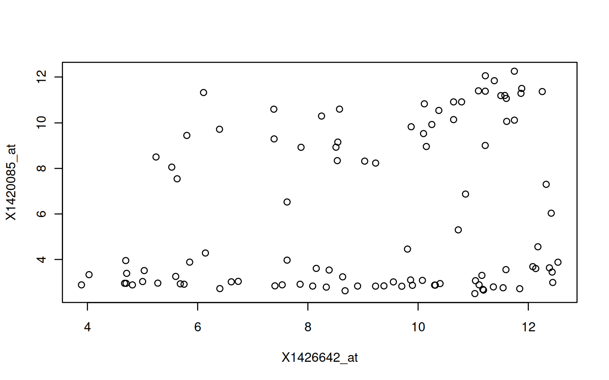
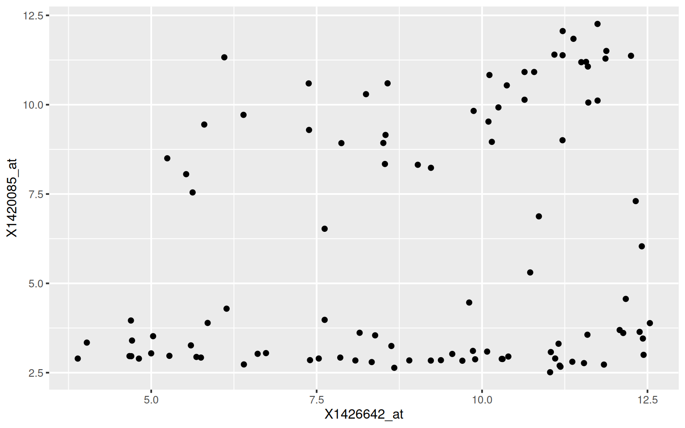
## Error in plot_probe_sets("X1416967_at", "123_at") :
## y %in% colnames(hiiragi2013df1)[1:6] is not TRUE
Page built: 2024-12-09 using R version 4.4.1 (2024-06-14)